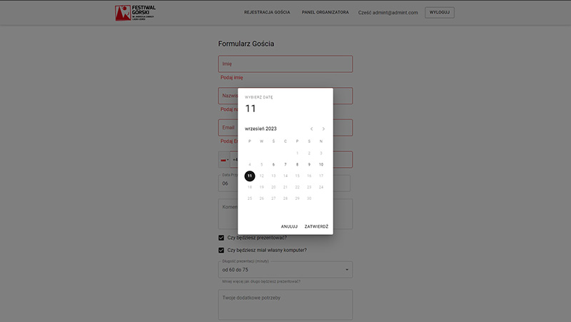
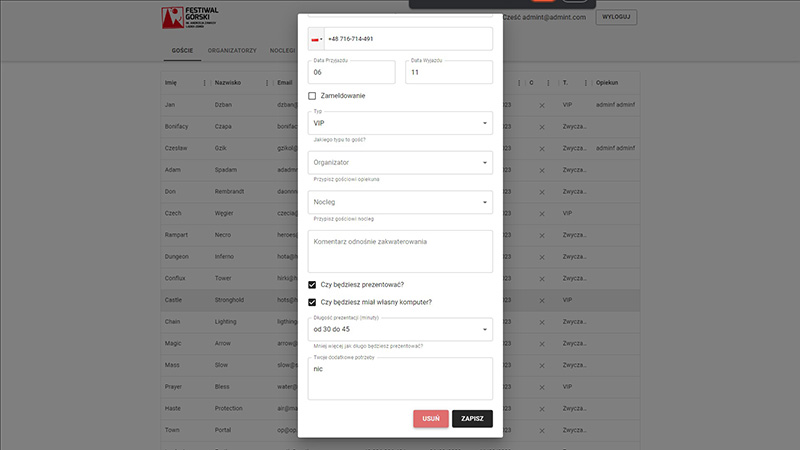
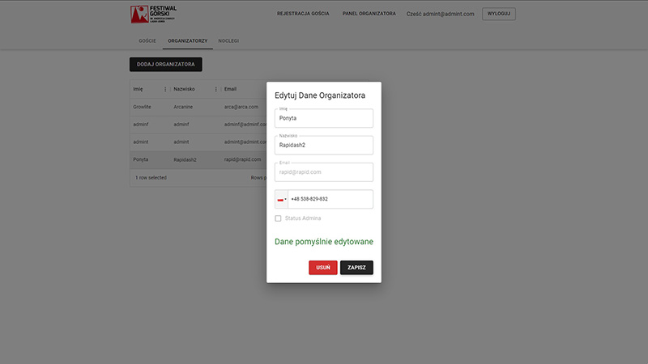
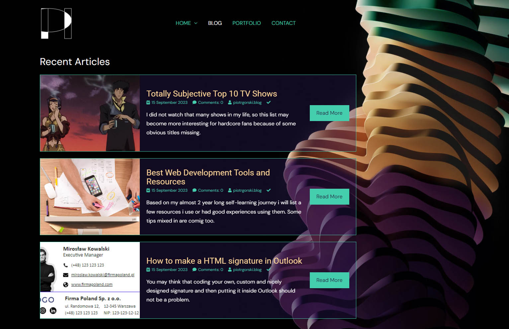

Projects
Commercial
This project is meant to help organizers with guest registration and storing/editing data of both mentioned above.
Application is aimed to be used in 2024 edition.
NEXT.JS | TYPESCRIPT | MATERIAL-UI | FORMIK | YUP | DAYJS | REACT-TEL-INPUT-2 REDUX | FIREBASE | CLOUD FUNCTIONS | i18NEXT
main page
includes form for guests to register. Forms are managed with formik and yup(frontend validation). Backend validation stored in Firebase rules.
Dayjs and react-phone-number-2 libraries were used for dates and international phone numbers formatting.
user/organizer panel
can be accessed by authenticated users. AUTH is managed with just email and password for now, because adding other forms of auth may result in unnecessary complexity.
All Data is stored in Firebase Realtime Database. User can perform every CRUD operation on stored guests.
admin actions
are to be executed by authorized users. Node.js enviornment was needed to give users admin custom claims which allow them to perform CRUD actions on other users.
All of the above are handled with Google Cloud Functions.
Hobby / Practice
DEPLOYMENT CURRENTLY IN MIGRATION!
Fullstack Forum App with features such as AUTH managed with cookies in express-sessions, caching in urql, SSR plus CSR usage, password reset and cursor based pagination. Backend uses GRAPHQL API.
REACT | NODE.JS | POSTGRESQL | TYPESCRIPT | GRAPHQL | URQL | TYPEORM | REDIS | NEXTJS | CHAKRA UI
Fullstack music app with CRUD operations and NEWS API usage made with Node.js, Express, MongoDB/Mongoose, EJS and CSS. Images saving and previewing was optimized with FilePond.
NODE.JS | EXPRESS | MONGODB/MONGOOSE | EJS | CSS
E-commerce store with a lot of hard coded data. Made with HTML, SCSS and vanilla JS. Some of the CSS/JS features are : darkmode, basic searchbar, on-click popup, on-click ad's slider, timer. Specific site navigation can be found in github README.
HTML | SCSS | JAVASCRYPT
Here are some interview tasks i've done.


Blog
This website was made mainly for getting to know WordPress, but ended being a writing/english practice too.
Also "Outlook signature" post is actually very relevant in my opinion.
See Website
if
( You're curious about my design skills ) {
then definitely check my
Architecture Portfolio
}
CV
CV - polish CV - englishAbout Me
My name is Piotr Górski, graduated architect currently working on everything around web dev.
Read More